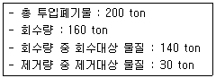
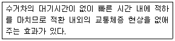
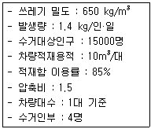
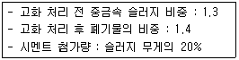
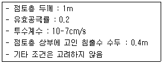
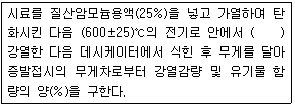
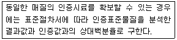
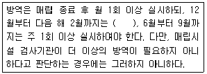

폐기물처리기사 (2013-06-02 기출문제)
1과목: 폐기물 개론
1. 쓰레기 수거노선을 설정할 때 유의할 사항과 가장 거리가 먼 내용은?
- 아주 많은 양의 쓰레기가 발생되는 발생원은 하루 중 가장 먼저 수거한다.
- 적은 양의 쓰레기가 발생하나 동일한 수거빈도를 받기를 원하는 적재지점은 가능한 한 같은 날 왕복 내에서 수거하도록 한다.
- 가능한 한 반시계방향으로 수거노선을 정한다.
- 언덕길은 내려가면서 수거하며 U자형 회전을 피해 수거한다.
(정답률: 82%)

2. 함수율이 60%인 쓰레기를 건조시켜서 함수율이 30%인 쓰레기로 만들면 쓰레기 5ton당 약 얼마의 수분을 증발시켜야 하는가? (단, 쓰레기 비중은 1.0)
- 약 2.14ton
- 약 2.86ton
- 약 3.12ton
- 약 3.84ton
(정답률: 43%)
3. 1일 도시쓰레기의 1인당 발생량이 0.6kg이고 쓰레기의 밀도가 0.6ton/m3이라고 할 때 차량적재 용량이 4.4m3인 차량 한 대에 실을 수 있는 쓰레기를 쓰레기 발생인구로 환산하면 몇 명에 해당되는가? (단, 1일 기준, 압축 등 기타 조건은 고려하지 않음)
- 3400명
- 3800명
- 4400명
- 4800명
(정답률: 59%)
4. 어떤 쓰레기의 입도를 분석한 바 입도누적곡선상의 10%, 30%, 60%, 90%의 입경이 각각 2, 5, 10, 20mm이었다고 한다. 이 때 균등계수는?
- 2
- 5
- 10
- 20
(정답률: 87%)
5. 압축기에 쓰레기를 넣고 압축시킨 결과 압축비가 5였다. 용적감소율은?
- 50%
- 60%
- 80%
- 90%
(정답률: 67%)
6. 다음은 슬러지의 수분을 결합상태에 따라 구분한 것이다. 이중 탈수가 가장 어려운 것은?
- 내부수
- 간극 모관 결합수
- 표면 부착수
- 간극수
(정답률: 83%)
7. 어느 도시에서 발생하는 쓰레기의 성분 중 비가연성이 약 70wt%를 차지하는 것으로 조사되었다. 밀도 400kg/m3인 쓰레기가 10m3 있을 때 가연성 물질의 양은 약 몇 ton인가?
- 1.0
- 1.2
- 2.2
- 3.4
(정답률: 73%)
8. 다음 조건인 경우, Worrell식 및 Rietema식에 의한 선별효율(%)은 각각 얼마인가?

- Ew=53.3 및 Er=50.3
- Ew=50.3 및 Er=53.3
- Ew=53.3 및 Er=56.0
- Ew=56.0 및 Er=53.3
(정답률: 34%)
9. 인구 10000명의 도시에서 1일 1인당 1.5kg의 쓰레기를 배출하고 있다. 이 때 쓰레기의 평균 겉보기 밀도는 500kg/m3이다. 일주일 간 발생되는 쓰레기의 양은? (단, 토요일과 일요일은 2.0kg/인·일의 율료 배출)
- 150m3
- 200m3
- 230m3
- 250m3
(정답률: 63%)
10. 무게 20톤, 밀도 250kg/m3인 폐기물을 밀도 600kg/m3로 압축하였다면 압축비는?
- 2.2
- 2.4
- 2.6
- 2.8
(정답률: 56%)
11. 다음 중 쓰레기의 발생량 조사 방법이 아닌 것은?
- 직접 계근법
- 경향법
- 적재 차량 계수 분석
- 물질수지법
(정답률: 79%)
12. 다음 내용은 어떠한 적환 시스템을 설명하는 것인가?

- 직접투하방식
- 저장투하방식
- 간접투하방식
- 압축투하방식
(정답률: 65%)
13. 와전류식 선별에 관한 내용으로 틀린 것은?
- 비철금속의 분리, 회수에 이용한다.
- 전기허용도 차이에 의해 비전도체들을 각각 선별 할 수 있다.
- 와전류식 선별기의 순도와 회수율은 95%까지도 보고되고 있다.
- 전자석 유도에 관한 패러데이법칙을 기초로 한다.
(정답률: 27%)
14. 함수율 90%인 폐기물에서 수분을 제거하여 처음 무게의 70%로 줄이고 싶다면 함수율을 얼마로 감소시켜야 하는가? (단, 폐기물 비준은 1.0 기준)
- 72.3%
- 77.2%
- 81.6%
- 85.7%
(정답률: 74%)
15. 다음의 채취한 폐기물 시료 분석절차 중 가장 먼저 진행하여야 하는 것은?
- 발열량 측정
- 전처리(절단 및 분쇄)
- 분류(가연성, 불연성)
- 화학적 조성분석
(정답률: 47%)
16. 폐기물 압축기에 관한 설명으로 옳지 않은 것은?
- 고정압축기는 주로 수압으로 압축시킨다.
- 고정압축기는 압축방법에 따라 수평식과 수직식 압축기로 나눌 수 있다.
- 백(Bag)압축기는 회전판 위에 열려진 상태로 놓여 있는 백과 압축피스톤의 조합으로 구성된다.
- 백(Bag)압축기 중 회분식이란 투입량을 일정량씩 수회 분리하여 간헐적인 조작을 행하는 것을 말한다.
(정답률: 60%)
17. MHT값이 1.8이고 6,000,000톤/년의 쓰레기를 수거해야 한다면 필요한 인부는 몇 명인가? (단, 수거인부의 1일 작업시간은 8시간이고, 1년 작업일수는 300일이다)
- 3500명
- 4000명
- 4500명
- 5000명
(정답률: 65%)
18. 파쇄기로 20cm의 폐기물을 5cm로 파쇄하는데 에너지가 40kWh/ton이 소요되었다. 15cm의 폐기물을 5cm로 파쇄시 톤당 소요되는 에너지량은 몇 kWh/ton인가? (단, Kick의 법칙을 이용할 것)
- 30.4
- 31.7
- 34.6
- 36.8
(정답률: 53%)
19. Pipeline 수송에 관한 내용으로 틀린 것은?
- 가설 후에 경로변경이 곤란하고 설치비가 높다.
- 쓰레기의 발생밀도가 높은 인구밀집지역 및 아파트지역 등에서 현실성이 있다.
- 조대쓰레기의 압축, 파쇄 등의 전처리가 필요없다.
- 잘못 투입된 물건은 회수가 곤란하다.
(정답률: 75%)
20. 다음 조건을 가진 어느 지역의 쓰레기 수거회수는 1주일에 몇 회이어야 하는가? (단, 거리나 기타 제약은 고려하지 않는다)

- 12회
- 15회
- 18회
- 21회
(정답률: 50%)
2과목: 폐기물 처리 기술
21. 피산소성(혐기성) 소화 탱크에서 유기물이 70%, 무기물이 30%인 슬러지를 소화하여 소화슬러지의 유기물이 60%, 무기물이 40%가 되었다면 소화율은? (단, 비중은 1.0 기준)
- 약 48%
- 약 42%
- 약 36%
- 약 31%
(정답률: 50%)
22. 매립장 침출수 차단방법인 연직차수막과 표면차수막을 비교한 것으로 틀린 것은?
- 연직차수막은 지중에 수평방향의 차수층이 존재할 때 사용한다.
- 연직차수막은 지하수 집배수 시설이 필요하다.
- 연직차수막은 차수막 보강시공이 가능하다.
- 연직차수막은 차수막 단위면적당 공사비가 비싸다.
(정답률: 62%)
23. 일반적으로 매립장 침출수 생성에 가장 큰 영향을 미치는 인자는?
- 쓰레기의 함수율
- 지하수의 유입
- 표토를 침투하는 강수(降水)
- 쓰레기 분해과정에서 발생하는 발생수
(정답률: 70%)
24. 중금속 슬러지를 다음의 조건으로 시멘트 고형화할 때 부피변화율(VCF)은?

- 0.9
- 1.1
- 1.3
- 1.5
(정답률: 65%)
25. 혐기성 소화공법에 관한 설명으로 틀린 것은?
- 호기성 소화에 비하여 소화슬러지의 발생량이 적다.
- 오랜 소화기간으로 소화슬러지 탈수 및 건조가 어렵다.
- 소화가스는 냄새가 나고 부식성이 높은 편이다.
- 고농도 폐수나 분뇨를 비교적 낮은 에너지 비용으로 처리할 수 있다.
(정답률: 54%)
26. 합성차수막인 CSPE에 관한 설명으로 틀린 것은?
- 미생물에 강하다.
- 강도가 높다.
- 산과 알칼리에 특히 강하다.
- 기름, 탄화수소 및 용매류에 약하다.
(정답률: 58%)
27. 처리용량(분뇨투입량)이 30m3/day인 분뇨처리장에 가스 저장탱크를 설계하고자 한다. 가스 저류시간을 8시간으로 하고 생성가스량은 투입량의 8배로 가정한다면 가스탱크의 용량은?
- 65m3
- 70m3
- 75m3
- 80m3
(정답률: 58%)
28. 슬러지를 처리하기 위해 하수처리장 활성슬러지 1% 농도의 폐액 100m3을 농축조에 넣었더니 5% 농도의 슬러지로 농축되었다. 농축조에 농축되어 있는 슬러지 양은? (단, 상징액의 농도는 고려하지 않으며, 비중은 1.0)
- 35m3
- 30m3
- 25m3
- 20m3
(정답률: 40%)
29. 토양오염정화 방법 중 Bioventing 공법의 장단점으로 틀린 것은?
- 배출가스 처리의 추가비용이 없다.
- 추가적인 영양염류의 공급이 필요하다.
- 주로 포화층에 적용한다.
- 장치가 간단하고 설치가 용이하다.
(정답률: 40%)
30. 다이옥신과 퓨란에 대한 설명으로 틀린 것은?
- PVC 또는 플라스틱 등을 포함하는 합성물질을 연소시킬 때 발생한다.
- 여러 개의 염소원자와 1~2개의 수소원자가 결합된 두 개의 벤젠고리를 포함하고 있다.
- 다이옥신의 이성체는 75개이고, 퓨란은 135개이다.
- 2,3,7,8 PCDD의 독성계수가 1이며 여타 이성체는 1보다 작은 등가계수를 갖는다.
(정답률: 64%)
31. Trench Method를 적용하여 쓰레기를 매립하려 한다. Trench 용량은 10000m3이며 인구 2000명, 1인 1일 쓰레기 배출량 1.0kg인 도시에서 발생되는 쓰레기를 매립한다면 Trench의 사용일수는? (단, 압축 전 쓰레기 밀도 500kg/m3이며 매립 시 압축에 의해 부피가 40% 감소한다)
- 3867일
- 3967일
- 4067일
- 4167일
(정답률: 39%)
32. 인구 6만명인 어느 도시의 쓰레기 발생량은 하루 1인당 1kg이다. 이 도시에서 발생된 쓰레기를 10년 동안 압축시켜 매립하고자 할 때 필요한 매립지 소요부지는? (단, 압축된 쓰레기의 밀도는 600kg/m3이고, 압축쓰레기의 평균 매립고는 5m이다)
- 71000m2
- 72000m2
- 73000m2
- 74000m2
(정답률: 59%)
33. 시멘트 고형화 방법 중 연소가스 탈황 시 발생된 슬러지처리에 주로 적용되는 것은?
- 시멘트기초법
- 석회기초법
- 포졸란첨가법
- 자가시멘트법
(정답률: 65%)
34. 함수율이 98%이고, 고형물질 중 유기물이 50%인 생슬러지 400m3를 혐기성 소화하여 함수율 85%의 소화 슬러지가 얻어졌다면 이 때 소화슬러지의 발생량은? (단, 슬러지 고형물질은 유기물과 무기물로 나누며, 소화 전후 슬러지의 비중은 1.0이고 소화 과정에서 생슬러지의 유기물은 50%가 분해됨)
- 30m3
- 40m3
- 50m3
- 60m3
(정답률: 36%)
35. 함수율이 80%인 음식물쓰레기 10ton과 함수율이 20%인 톱밥 10ton을 혼합하여 퇴비화 하고자 한다. 이 때 혼합물질의 C/N비는? (단, 음식물쓰레기의 유기탄소는 TS의 40%이고 총질소량은 5%이며, 톱밥의 유기탄소는 TS의 80%이고 총질소량은 3%이다. 비중은 1.0 기준)
- 약 8.6
- 약 10.4
- 약 15.0
- 약 21.2
(정답률: 43%)
36. A매립지의 경우 COD를 기준 이내로 처리하기 위해 기존공정에 펜톤처리 공정과 RBC 공정을 추가하여 운전하고 있다면 다음 중 공정 추가 원인으로 가장 적합한 것은?
- 난분해성 유기물질의 과다유입
- 휘발성 유기화합물의 과다유입
- 질소성분 과다유입
- 용존고형물 과다유입
(정답률: 63%)
37. 다음 조건의 관리형 매립지에서 침출수의 통과 년수는?

- 약 6.33년
- 약 5.24년
- 약 4.53년
- 약 3.81년
(정답률: 59%)
38. 1차 반응속도에서 반감기(초기농도가 50% 줄어드는 시간)가 1시간이라면 초기농도의 90%가 줄어드는데 걸리는 시간은?
- 3.3시간
- 4.3시간
- 5.3시간
- 6.3시간
(정답률: 47%)
39. 결정도(Crystallinity)에 따른 합성 차수막의 성질에 대한 설명으로 틀린 것은?
- 결정도가 증가할수록 단단해진다.
- 결정도가 증가할수록 충격에 약해진다.
- 결정도가 증가할수록 화학물질에 대한 저항성이 증가한다.
- 결정도가 증가할수록 열에 대한 저항성이 감소한다.
(정답률: 62%)
40. BOD농도가 30000ppm인 생분뇨를 1차 처리(소화)하여 BOD를 75% 제거하였다. 이 1차 처리수를 20배 희석하여 2차 처리하였을 때 방류수의 BOD농도가 20ppm이었다면 2차 처리에서의 BOD제거율은? (단, 희석수의 BOD는 0ppm으로 가정한다)
- 90.8%
- 92.2%
- 94.7%
- 98.3%
(정답률: 44%)
3과목: 폐기물 소각 및 열회수
41. 증기터빈 중에서 산업용의 약 70%를 점하는 것으로 증기를 다량으로 소비하는 산업분야에 널리 적용되고 있으며 열효율은 90%에 가까운 평가를 기대할 수 있는 것은? (단, 증기터빈 분류관점 : 증기이용방식 기준)
- 충동터빈
- 축류터빈
- 단류터빈
- 배압터빈
(정답률: 62%)
42. 평균 발열량이 6500kcal/kg인 P시의 폐기물을 소각하여 그 도시의 지역난방에 필요한 열에너지를 얻고자 한다. 이 때 지역난방에 필요한 난방수를 하루에 200ton 얻기 위하여 필요한 폐기물의 양(kg/d)은? (단, 난방보일러의 효율은 70%, 보일러 급수온도는 20℃, 보일러 배출수 온도 62℃, 물의 비열은 1.0 kcal/kg·℃)
- 약 1850
- 약 2650
- 약 3320
- 약 4150
(정답률: 22%)
43. 쓰레기를 소각 후 남은 재의 중량은 소각 전 쓰레기 중량의 1/4이다. 쓰레기 30톤을 소각하였을 때 재의 용량은 4m3이라 하면 재의 밀도는?
- 1.3톤/m3
- 1.6톤/m3
- 1.9톤/m3
- 2.1톤/m3
(정답률: 71%)
44. 가스연료의 저위 발열량이 15000 kcal/Sm3, 이론연소가스량 20 Sm3/Sm3, 공기온도 20℃일 때 연료의 이론연소온도는? (단, 연료연소가스의 평균정압비열은 0.75 kcal/Sm3·℃, 공기는 예열되지 않으며 연소가스는 해리되지 않음)
- 720℃
- 880℃
- 920℃
- 1020℃
(정답률: 50%)
45. 프로판 1Sm3를 과잉공기계수 1.1로 완전연소시킬 경우에 발생하는 건조연소가스량(Sm3)은? (단, 프로판 분자량 44, 표준상태 기준)
- 약 21.6
- 약 24.2
- 약 26.8
- 약 28.9
(정답률: 43%)
46. 공기를 사용하여 C4H10을 완전연소시킬 때 건조연소 가스 중의 (CO2)max(%)는?
- 12.4
- 14.1
- 16.6
- 18.3
(정답률: 48%)
47. 소각로의 소각능률이 170kg/m2·hr이며 쓰레기의 양이 20000kg/일이다. 1일 8시간 소각하면 화격자 면적은?
- 약 7.2 m2
- 약 10.4 m2
- 약 12.4 m2
- 약 14.7 m2
(정답률: 77%)
48. 코크스 또는 분해연소가 끝난 석탄은 열분해가 일어나기 어려운 탄소가 주성분으로 그것 자체가 연소하는 과정으로 적열(赤熱)할 따름이지 화염은 없는 연소 형태는?
- 확산연소
- 표면연소
- 내부연소
- 증발연소
(정답률: 40%)
49. 폐기물 열분해에 대한 설명으로 틀린 것은?
- 고온열분해에서는 가스 상태의 연료가 많이 생성된다.
- 열분해 장치는 고정상, 유동상, 부유상태 등으로 구분할 수 있다.
- 열분해 온도에 따라 가스구성비가 좌우되는데, 온도가 증가할수록 CO2 구성비(함량)는 감소된다.
- 열분해 온도에 따라 가스구성비가 좌우되는데, 온도가 증가할수록 수소 구성비(함량)는 감소된다.
(정답률: 45%)
50. 착화온도가 높아지는 경우로 옳은 것은?
- 발열량이 클수록
- 분자구조가 간단할수록
- 화학반응성이 클수록
- 화학결합의 활성도가 클수록
(정답률: 79%)
51. 배출가스의 분진 농도가 2000 mg/Sm3인 소각로에서 분진을 처리하기 위하여 집진효율 40%인 중력집진기, 90%인 여과집진기, 그리고 세정집진기가 직렬로 연결되어 있다. 먼지 농도를 5 mg/Sm3 이하로 줄이기 위해서는 세정집진기의 집진효율은 최소한 몇 % 이상 되어야 하는가?
- 90%
- 92%
- 94%
- 96%
(정답률: 43%)
52. 아세틸렌(C2H2) 100kg을 완전연소시킬 때 필요한 이론적 산소요구량(kg)은?
- 약 123
- 약 214
- 약 308
- 약 415
(정답률: 60%)
53. 연소기 중 다단로의 장단점으로 틀린 것은?
- 열용량이 높아 분진 발생률이 낮다.
- 체류시간이 길어 휘발성이 적은 폐기물 연소에 유리하다.
- 늦은 온도반응 때문에 보조연료사용을 조절하기가 어렵다.
- 많은 연소영역이 있어 연소효율을 높일 수 있다.
(정답률: 38%)
54. 탄소 80%, 수소 10%, 산소 8%, 황 2%로 조성된 중유를 공기비 1.2로 연소시킬 때 필요한 실제공기량은?
- 8.5 Sm3/kg
- 9.5 Sm3/kg
- 10.5 Sm3/kg
- 11.5 Sm3/kg
(정답률: 40%)
55. 어떤 폐기물의 원소조성이 다음과 같을 때 이론공기량(Sm3/kg)은? (단, 가연성분 : 70%(C=50%, H=10%, O=35%, S=5%), 수분 : 20%, 회분 : 10%)
- 3.4 Sm3/kg
- 3.7 Sm3/kg
- 4.0 Sm3/kg
- 4.3 Sm3/kg
(정답률: 42%)
56. 유동층 소각로 방식에 대한 설명 중 틀린 것은?
- 반응시간이 빨라 소각시간이 짧다.(로 부하율이 높다)
- 기계적 구동부분이 많아 고장률이 높다.
- 폐기물의 투입이나 유동화를 위해 파쇄가 필요하다.
- 가스온도가 낮고 과잉공기량이 적어 NOx도 적게 배출된다.
(정답률: 63%)
57. 먼지를 제어하기 위한 전기집진장치의 장단점으로 틀린 것은?
- 대량의 가스를 처리할 수 있다.
- 회수가치성이 있는 입자포집이 가능하다.
- 전압변동과 같은 조건변동에 쉽게 적응하기 어렵다.
- 유지관리가 어렵고 유지비가 고가이다.
(정답률: 80%)
58. 함수율 80%인 슬러지 케이크 20ton을 소각할 때 소각재 발생량(kg)은? (단, 슬러지케이크 비중 1.0, 케이크 건조중량당 무기성분 10%, 유기성분 중 연소율 90%, 소각에 의한 무기물 손실은 없음)
- 360
- 420
- 760
- 920
(정답률: 43%)
59. 열교환기 중 절탄기에 관한 설명으로 틀린 것은?
- 급수 예열에 의해 보일러수와의 온도차가 증가함에 따라 보일러 드럼에 열응력이 발생한다.
- 급수온도가 낮을 경우, 굴뚝가스 온도가 저하하면 절탄기 저온부에 접하는 가스온도가 노점에 달하여 절탄기를 부식시킨다.
- 굴뚝의 가스온도 저하로 인한 굴뚝 통풍력의 감소에 주의하여야 한다.
- 보일러 전열면을 통하여 연소가스의 여열로 보일러 급수를 예열하여 보일러의 효율을 높이는 장치이다.
(정답률: 54%)
60. 스토커식 쓰레기 소각로를 설계하고자 한다. 쓰레기 발열량 기준이 1000kcal/kg이고, 쓰레기량이 100 t/일이라고 할 때, 로 내 열부하가 3×105kcal/m3·hr인 스토커식 소각로의 용적은?
- 약 9 m3
- 약 12 m3
- 약 14 m3
- 약 17 m3
(정답률: 54%)
4과목: 폐기물 공정시험기준(방법)
61. 다음 설명 중 틀린 것은?
- 공정시험기준에서 사용하는 모든 기구 및 기기는 측정 결과에 대한 오차가 허용되는 범위 이내인 것을 사용하여야 한다.
- 연속측정 또는 현장측정의 목적으로 사용하는 측정기기는 공정시험기준에 의한 측정치와의 정확한 보정을 행한 후 사용할 수 있다.
- 각각의 시험은 따로 규정이 없는 한 실온에서 실시하고 조작 직후에 그 결과를 관찰한다. 단, 온도의 영향이 있는 것의 판정은 표준온도를 기준으로 한다.
- 비함침성 고상폐기물이라 함은 금속판, 구리선 등 기름을 흡수하지 않는 평면 또는 비평면형태의 변압기 내부부재를 말한다.
(정답률: 56%)
62. 폐기물이 5톤 미만의 차량에 적재되어 있는 경우 적재폐기물을 평면상에서 몇 등분하여 시료를 채취하는가?
- 5등분
- 6등분
- 8등분
- 9등분
(정답률: 64%)
63. 다음은 강열감량 및 유기물함량(중량법) 측정에 관한 내용이다. 괄호 안에 내용으로 옳은 것은?

- 2시간
- 3시간
- 4시간
- 5시간
(정답률: 69%)
64. 자외선/가시선 분광법으로 시안을 분석할 때 사용되는 시안 증류장치의 구성에 해당되지 않는 것은?
- 역류방지관
- 냉각관
- 흡수관
- 안전깔대기
(정답률: 32%)
65. 유기인의 분석에 관한 내용으로 틀린 것은?
- 기체크로마토그래피를 사용할 경우 질소인 검출기 또는 불꽃광도 검출기를 사용한다.
- 기체크로마토그래피는 유기인 화합물 중 이피엔, 파라티온, 메틸디메톤, 다이아지논 및 펜토에이트 분석에 적용된다.
- 유기인 분석대상 시료채취는 유리병을 사용하며 채취 전 시료로 3회 이상 세척하여야 한다.
- 유기인 분석대상 시료는 시료 채취 후 추출하기 전까지 4℃ 냉암소에 보관하고 7일 이내 추출하며 40일 이내에 분석한다.
(정답률: 79%)
66. 용출시험을 위한 용출조작에 관한 내용으로 옳은 것은?
- pH를 5.8~6.3으로 용매를 1:5의 비율로 시료 혼합액을 만든다.
- 진탕기를 사용하여 4시간 연속 진탕한 다음 0.45㎛의 유리섬유 여지로 여과한다.
- 여과가 어려울 경우 농축기를 사용하여 30분 이상 농축·분리한 다음 상등액을 적당량 취하여 용출 시험용 검액으로 한다.
- 상온, 상압에서 진탕횟수가 매 분당 약 200회, 진폭이 4~5cm인 진탕기를 사용한다.
(정답률: 58%)
67. 시료 중 수분함량 및 고형물 함량을 정량하고자 실험한 결과가 다음과 같다면 고형물 함량은? (단, 증발접시의 무게(W1)=245g, 건조 전의 증발접시와 시료의 무게(W2)=260g, 건조 후의 증발접시와 시료의 무게(W3)=250g이었다)
- 약 21%
- 약 24%
- 약 28%
- 약 33%
(정답률: 59%)
68. 폐기물 소각시설의 소각재 시료채취에 관한 내용 중 연속식 연소방식의 소각재 반출 설비에서의 시료채취에 관한 내용으로 틀린 것은?
- 바닥재 저장조에서는 부설된 크레인을 이용하여 채취한다.
- 비산재 저장조에서는 유입구에서 혼합 채취한다.
- 소각재가 운반차량에 적재되어 있는 경우에는 적재차량에서 채취하는 것을 원칙으로 한다.
- 부지 내에 야적되어 있는 경우에는 야적더미에서 각 층별로 채취하는 것을 원칙으로 한다.
(정답률: 42%)
69. 30% 수산화나트륨(NaOH)은 몇 몰(M)인가? (단, NaOH의 분자량 40)
- 4.5 M
- 5.5 M
- 6.5 M
- 7.5 M
(정답률: 58%)
70. 할로겐화 유기물질(기체크로마토그래피-질량분석법) 측정시 간섭물질에 관한 설명으로 틀린 것은?
- 추출용매 안에 간섭물질이 발견되면 증류하거나 컬럼크로마토그래피에 의해 제거한다.
- 디클로로메탄과 같이 머무름 시간이 긴 화합물은 용매의 피크와 겹쳐 분석을 방해할 수 있다.
- 이 실험으로 끓는점이 높거나 극성 유기화학물들이 함께 추출되므로 이들 중에는 분석을 간섭하는 물질이 있을 수 있다.
- 플루오르화탄소나 디클로로메탄과 같은 휘발성 유기물은 보관이나 운반 중에 격막을 통해 시료 안으로 확산되어 시료를 오염시킬 수 있으므로 현장 바탕시료로서 이를 점검하여야 한다.
(정답률: 41%)
71. 정도관리 요소 중 다음이 설명하고 있는 것은?

- 정확도
- 정밀도
- 검출한계
- 정량한계
(정답률: 58%)
72. 폐기물 시료의 분할채취방법 중 모아진 대시료를 네모꼴로 엷게 균일한 두께로 펴서 20개의 덩어리로 나눈 후 각 등분에서 균등량을 취하여 하나의 시료로 하는 것은?
- 사각분할법
- 구획법
- 교호삽법
- 원추4분법
(정답률: 54%)
73. 자외선/가시선 분광법에 의한 납(Pb) 시험에 관한 내용으로 틀린 것은?
- 납 착염의 흡광도를 520nm에서 측정하는 방법이다.
- 전처리를 하지 않고 직접 시료를 사용하는 경우, 시료 중에 시안화합물이 함유되어 있으면 염산 산성으로 끓여 시안화물을 완전히 분해 제거한 다음 실험한다.
- 시료에 다량의 비스무트(Bi)가 공존하면 시안화칼륨 용액으로 수 회 씻어 무색으로 하여 실험한다.
- 정량한계는 0.001mg이다.
(정답률: 50%)
74. 대상폐기물의 양이 15000kg인 경우 시료의 최소수는?
- 4
- 6
- 10
- 14
(정답률: 59%)
75. 석면의 종류 중 백석면의 형태와 색상에 관한 내용으로 가장 거리가 먼 것은?
- 곧은 물결 모양의 섬유
- 다발의 끝은 분산
- 다색성
- 가열되면 무색~밝은 갈색
(정답률: 65%)
76. 자외선/가시선 분광광도계의 광원부의 광원 중자외부의 광원으로 주로 사용되는 것은?
- 속빈음극램프
- 텅스텐램프
- 광전도도관
- 중수소 방전관
(정답률: 69%)
77. 비소(원자흡수분광광도법) 측정에 관한 내용으로 틀린 것은?
- 이염화주석으로 시료 중의 비소를 3가 비소로 환원시킨다.
- 아르곤-수소 불꽃에 주입하여 분석한다.
- 낮은 농도의 비소는 메틸아이소부틸케톤과 착물을 형성시켜 분석한다.
- 정량범위는 사용하는 장치 및 측정조건에 따라 다르나 193.7nm에서 0.0⑤~0.5mg/L이다.
(정답률: 34%)
78. 다음 총칙에 사항 중 틀린 것은?
- “방울수”라 함은 20℃에서 정제수 20방울을 적하할 때 그 부피가 약 1mL가 되는 것을 뜻한다.
- “항량으로 될 때까지 건조한다”라 함은 같은 조건에서 1시간 더 건조할 때 전후 무게의 차가 0.1mg 이하일 때를 말한다.
- “감압 또는 진공”이라 함은 따로 규정이 없는 한 15mmHg 이하를 말한다.
- “약”이라 함은 기재된 양에 대하여 ±10% 이상의 차가 있어서는 안 된다.
(정답률: 60%)
79. 할로겐화 유기물질을 기체크로마토그래피-질량분석법으로 분석하는 경우 정량한계는?
- 각 할로겐화 유기물질에 대하여 2mg/kg이다.
- 각 할로겐화 유기물질에 대하여 5mg/kg이다.
- 각 할로겐화 유기물질에 대하여 10mg/kg이다.
- 각 할로겐화 유기물질에 대하여 15mg/kg이다.
(정답률: 42%)
80. 다음의 pH 표준액 중 pH값이 가장 높은 것은?(단, 0℃ 기준)
- 붕산염 표준액
- 인산염 표준액
- 프탈산염 표준액
- 수산염 표준액
(정답률: 69%)
5과목: 폐기물 관계 법규
81. 폐기물통계조사 중 폐기물 발생 및 처리현황 조사(1년마다 폐기물 배출 및 처리업체의 보고자료 등 서면조사에 기초하여 작성) 항목으로 틀린 것은?
- 생활폐기물 관리구역 및 관리예산 등 폐기물관리 현황
- 시·도 및 시·군·구별 폐기물 처분시설, 재활용 시설 및 업체 현황
- 시·도 및 시·군·구별 폐기물 종류별 처리 현황
- 시·도 및 시·군·구별 가정부분과 비가정부분의 폐기물 발생 원단위
(정답률: 34%)
82. 설치신고대상 폐기물처리시설의 규모기준으로 틀린 것은?
- 소각열회수시설로서 1일 재활용능력이 100톤 미만인 시설
- 생물학적 처분시설 또는 재활용시설로서 1일 처분능력 또는 재활용능력이 10톤 미만인 시설
- 일반소각시설로서 1일 처분능력이 100톤(지정폐기물의 경우에는 10톤) 미만인 시설
- 고온소각시설, 열분해시설, 고온용융시설 또는 열처리조합시설로서 시간당 처분능력이 100kg 미만인 시설
(정답률: 48%)
83. 영업정지 기간에 영업을 한 자에 대한 벌칙기준은?
- 2년 이하의 징역이나 1천만원 이하의 벌금
- 2년 이하의 징역이나 1천5백만원 이하의 벌금
- 3년 이하의 징역이나 2천만원 이하의 벌금
- 5년 이하의 징역이나 3천만원 이하의 벌금
(정답률: 29%)
84. 폐기물 처분시설 또는 재활용시설의 검사기준 중 음식물류 폐기물처리시설인 사료화시설의 정기검사항목에 해당되지 않는 것은?
- 가열, 건조시설의 작동상태
- 사료저장시설의 작동상태
- 사료발효시설의 작동상태
- 사료화제품의 적절성
(정답률: 39%)
85. 지정폐기물의 종류 중 폴리클로리네이티드비페닐 함유폐기물에 관한 기준으로 옳은 것은?
- 액체상태 외의 것(용출액 1L당 3.0mg 이상 함유한 것으로 한정한다)
- 액체상태 외의 것(용출액 1L당 0.3mg 이상 함유한 것으로 한정한다)
- 액체상태 외의 것(용출액 1L당 0.03mg 이상 함유한 것으로 한정한다)
- 액체상태 외의 것(용출액 1L당 0.003mg 이상 함유한 것으로 한정한다)
(정답률: 50%)
86. 환경부장관이나 시·도지사로부터 과징금 통지를 받은 자는 통지를 받은 날부터 며칠 이내에 과징을 부과권자가 정하는 수납기관에 납부하여야 하는가?
- 15일
- 20일
- 30일
- 60일
(정답률: 72%)
87. 폐기물 처리시설의 종류 중 재활용시설인 기계적 재활용시설에 관한 내용으로 틀린 것은?
- 절단시설(동력 10마력 이상인 시설로 한정한다)
- 세척시설(물을 1일 10m3 이상을 사용하는 시설로 한정한다)
- 정제시설(분리, 증류, 추출, 여과 등의 시설을 이용하여 폐기물을 재활용하는 단위시설을 포함한다)
- 연료화시설
(정답률: 29%)
88. 다음은 사후관리기준 및 방법 중 방역방법(차단형 매립시설은 제외)에 관한 내용이다. 괄호 안에 옳은 내용은?

- 필요시에
- 10일에 1회 이상
- 월 2회 이상
- 2주 1회 이상
(정답률: 67%)
89. 폐기물을 수탁하여 처리하는 자는 영업정지·휴업·폐업 또는 폐기물처리시설의 사용정지 등의 사유로 환경부령으로 정하는 사업장 폐기물을 처리할 수 없는 경우에는 환경부령으로 정하는 바에 따라 지체 없이 그 사실을 사업장 폐기물의 처리를 위탁한 배출자에게 통보하여야 한다. 이를 위반하여 통보하지 아니한 자에 대한 과태료 부과기준은?
- 100만원 이하
- 300만원 이하
- 500만원 이하
- 1천만원 이하
(정답률: 48%)
90. 폐기물처분시설 또는 재활용시설 중 음식물류 폐기물을 대상으로 하는 시설의 기술관리인 자격기준으로 틀린 것은?
- 토양환경산업기사
- 수질환경산업기사
- 대기환경산업기사
- 토목산업기사
(정답률: 20%)
91. 기술관리인을 두어야 할 폐기물처리시설 기준으로 틀린 것은? (단, 폐기물처리업자가 운영하는 폐기물처리시설 제외)
- 멸균분쇄시설로서 시간당 처분능력이 100kg 이상인 시설
- 사료화, 퇴비화 또는 연료화 시설로서 1일 재활용 능력이 5톤 이상인 시설
- 압축·파쇄·분쇄 또는 절단시설로서 1일 처분능력 또는 재활용능력이 10톤 이상인 시설
- 소각열회수시설로서 시간당 재활용능력이 600kg 이상인 시설
(정답률: 57%)
92. 환경부령으로 정하는 폐기물처리시설의 설치를 마친 자는 환경부령으로 정하는 검사기관으로부터 감사를 받아야 한다. 검사를 받으려는 자가 검사를 받기 위해 검사기관에 제출하는 검사신청서에 첨부하여야 하는 서류가 아닌 것은? (단, 음식물류 폐기물 처리시설의 경우)
- 설계도면
- 폐기물 성질, 상태, 양, 조성비 내용
- 재활용제품의 사용 또는 공급계획서(재활용의 경우만 제출한다)
- 운전 및 유지관리계획서(물질수지도를 포함한다)
(정답률: 64%)
93. 폐기물처리업 중 폐기물 수집, 운반업의 변경허가를 받아야 할 중요사항에 관한 내용으로 틀린 것은?
- 수집, 운반대상 폐기물의 변경
- 영업구역의 한정
- 주차장 소재지의 변경(지정폐기물을 대상으로 하는 수집, 운반업만 해당한다)
- 운반차량(임시차량 포함) 증차
(정답률: 53%)
94. 폐기물처리업의 허가를 받을 수 없는 자의 기준으로 틀린 것은?
- 파산선고를 받고 복권되지 아니한 자
- 폐기물관리법을 위반하여 징역 이상의 형을 선고 받고 그 형의 집행이 끝나거나 집행을 받지 아니하기로 확정된 후 2년이 지나지 아니한 자
- 폐기물관리법을 위반하여 집행유예를 선고받은 자로서 그 선고를 받은 날부터 2년이 지나지 아니한자
- 폐기물처리업의 허가가 취소된 자로서 그 허가가 취소된 날부터 2년이 지나지 아니한 자
(정답률: 53%)
95. 혈액, 체액, 분비물, 배설물이 함유되어 있는 탈지면의 의료폐기물 분류로 옳은 것은?
- 격리의료폐기물
- 위해의료폐기물 중 혈액오염폐기물
- 위해의료폐기물 중 조직물류폐기물
- 일반의료폐기물
(정답률: 77%)
96. 폐기물처리시설 주변지역 영향 조사 기준 중 조사방법(조사지점)에 관한 내용으로 옳은 것은?
- 미세먼지와 다이옥신 조사지점은 해당 시설에 인접한 주거지역 중 2개소 이상 지역의 일정한 곳으로 한다.
- 미세먼지와 다이옥신 조사지점은 해당 시설에 인접한 주거지역 중 3개소 이상 지역의 일정한 곳으로 한다.
- 미세먼지와 다이옥신 조사지점은 해당 시설에 인접한 주거지역 중 4개소 이상 지역의 일정한 곳으로 한다.
- 미세먼지와 다이옥신 조사지점은 해당 시설에 인접한 주거지역 중 5개소 이상 지역의 일정한 곳으로 한다.
(정답률: 88%)
97. 폐기물 관리의 기본원칙과 가장 거리가 먼 것은?
- 누구든지 폐기물을 배출하는 경우에는 주변 환경이나 주민의 건강에 위해를 끼치지 아니하도록 사전에 적절한 조치를 하여야 한다.
- 사업자는 공정개선 등을 통하여 제품의 유해성을 최소화하여 폐기물로 인한 환경오염을 사전에 예방하여야 한다.
- 국내에서 발생한 폐기물은 가능하면 국내에서 처리되어야 하고, 폐기물의 수입은 되도록 억제되어야 한다.
- 폐기물은 소각, 매립 등의 처분을 하기보다는 우선적으로 재활용함으로써 자원 생산성의 향상에 이바지하도록 하여야 한다.
(정답률: 47%)
98. 폐기물처리 신고자의 준수사항으로 옳은 것은?
- 정당한 사유 없이 계속하여 1년 이상 휴업하여서는 아니 된다.
- 정당한 사유 없이 계속하여 2년 이상 휴업하여서는 아니 된다.
- 정당한 사유 없이 계속하여 3년 이상 휴업하여서는 아니 된다.
- 정당한 사유 없이 계속하여 5년 이상 휴업하여서는 아니 된다.
(정답률: 65%)
99. 폐기물처리 기본계획에 포함되어야 할 사항과 가장 거리가 먼 것은?
- 재원의 조달계획
- 폐기물처리시설의 설치현황 및 향후 설치계획
- 폐기물의 처리현황과 향후 처리계획
- 폐기물의 수집·운반·보관 및 그 장비·용기 등의 개선에 관한 사항
(정답률: 40%)
100. 지정폐기물 중 의료폐기물을 수집·운반하는 경우의 시설, 장비, 기술능력 기준으로 틀린 것은?(단, 폐기물 처리업 중 폐기물수집, 운반업의 기준)
- 적재능력 0.45톤 이상의 냉장차량(섭씨 4도 이하인 것을 말한다) 5대(제주특별자치도의 경우에는 3대) 이상
- 소독장비 1식 이상
- 폐기물처리산업기사, 임상병리사 또는 위생사 중 1명 이상
- 모든 차량을 주차할 수 있는 규모의 주차장
(정답률: 28%)